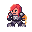
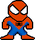
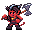
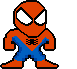
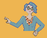
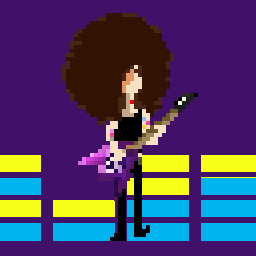
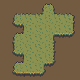
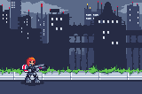

Today was about rallying together and draft a plan for the week.
Tasks for today:
Research state-of-the-art pixel art editors that are open source, and pick one or two for everyone to use.
Gather learning materials.
Craft this very own site :)
By the end of the day:
We tried out pre-compiled binaries and/or compiling from source Libresprite, Pixelorama and Aseprite (note that Aseprite's source is public but not copyleft).
We published this site on Github Pages.
Day One: Learning the ropes
Today we aimed to get used to pixel art editors and have a dab at making sprites. For that we suggested these activities:
Copy pre-existing sprites in our editor of choice, so we could explore it and get used to the tools and features (we chose Libresprite and Pixelorama).
Draw sprites based on a pre-existing template (for instance, the classic character from Mega Man), as explained in this video.
Here are some of the sprites we copied:
Eva: Copy of some cute rabites, from Seiken Densetsu 3.
Belén: Copy of Sonic from Sonic 2 (Master System), with the colors of the Shiny 16 palette.
Natacha: Scaled down version of an embroidery by iamnotadoll.
As for our custom creations, most of them based on a template:
Eva: A bard ready to rock! Based on Mega Man.
Belén: Shepard and Liara from Mass Effect, based on Mega Man.
Dani: Spiderman, based on Mega Man.
Dani: Larger version of the previous Spiderman sprite.
Eva: A rogue rat, based on Mega Man.
Day Two: Taming the lines
Today we wanted to focus on the basics of the craft, so we went on reading Chapter 1 from Pixel Logic, which is about drawing clear lines, avoiding jaggies and different outline styles and their possibilites.
Our aim for today was:
Learn about actually drawing pixel art.
Improve some of the sprites we made yesterday, fixing jaggies and trying out different outline styles.
Keep on working on new characters, applying what we just learned.
This is what we came up with:

Belén: Improved version of Shepard sprite (addressed jaggies + colored outline).
Belén: Improved version of Liara sprite (addressed jaggies + colored outline).
Eva: Animated bard.
Eva: Animated rabite, jumping.
Belén: Remake of Shepard from scratch, no template.

Dani: Improved version of the Spiderman sprite + animation.
Natacha: Self-portrait, with attention to avoid jaggies, etc.
Day Three: Animations and backgrounds
So far we had been focusing on characters, so today we opted for exploring backgrounds (including tiles) and also to keep dabbing into animations.
Explore drawing backgrounds
Learn about making tiles for backgrounds
Make some animations
And this is what we made!

Natacha: Karlach from Baldur's Gate 3.

Dani: Walking animation for Spiderman
Willy: Animated cactus (part of larger scene)

Eva: A self-portrait.

Carmen: Self-portrait, with an animation rocking the guitar!

Eva: Grass tiles forming an island.

Belén: Shepard (Mass Effect) in a city setting.